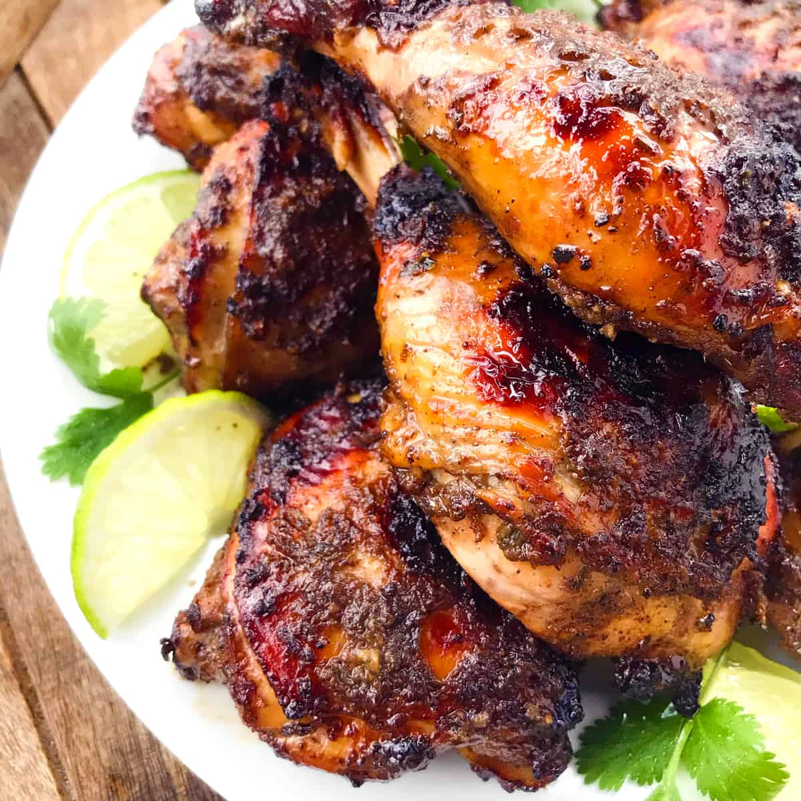

Ingredients:
- 1.5kg chicken, backbone removed and spatchcocked
- Mixed salad or coleslaw, to serve
For the Jerk Marinade:
- 225g onions, peeled and quartered
- 2 small Scotch bonnet chillies, halved and de-seeded
- 50g fresh root ginger, peeled and roughly chopped
- 3-cm piece fresh turmeric root, peeled and roughly chopped (or use 1 tbsp ground turmeric)
- ½ tsp ground allspice
- 15g fresh thyme leaves
- 120ml white wine vinegar
- 120ml dark soy sauce
- Sea salt and freshly ground black pepper
Essential kit:
Instructions:
- First, make the marinade. Place all the ingredients, except the seasoning, into a food processor and pulse until smooth
- Season with a little salt and a generous grinding of black pepper. And remember...you want it to be nice and...
- Cut slashes into the smooth side of the spatchcocked chicken so that the marinade can penetrate the flesh and place the chicken in a shallow dish. Pour over the marinade and rub well into the meat. Cover and chill for at least 2–3 hours, or preferably overnight, turning every now and then
- Preheat a barbecue with a lid and take the chicken out of the fridge to come up to room temperature
- Cook the chicken on the hot barbecue with the lid down for 40–50 minutes, turning occasionally and basting with any leftover marinade, until the juices run clear when the thickest part of the thigh is pierced with a thin metal skewer
- Remove the chicken from the heat and rest for a few minutes, then serve with a simple mixed salad or a traditional crunchy coleslaw
Scroll to top
Homepage